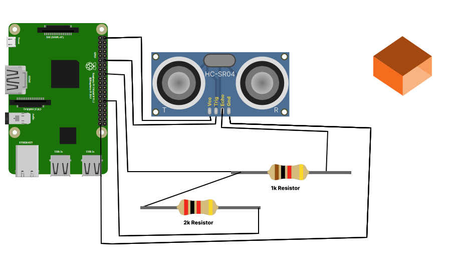
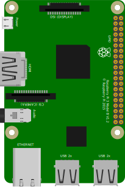
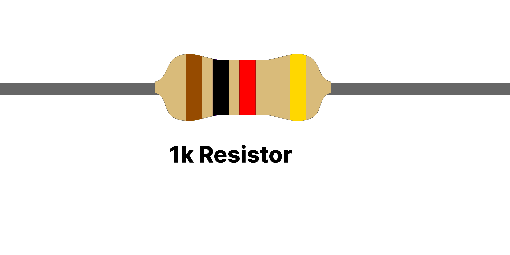
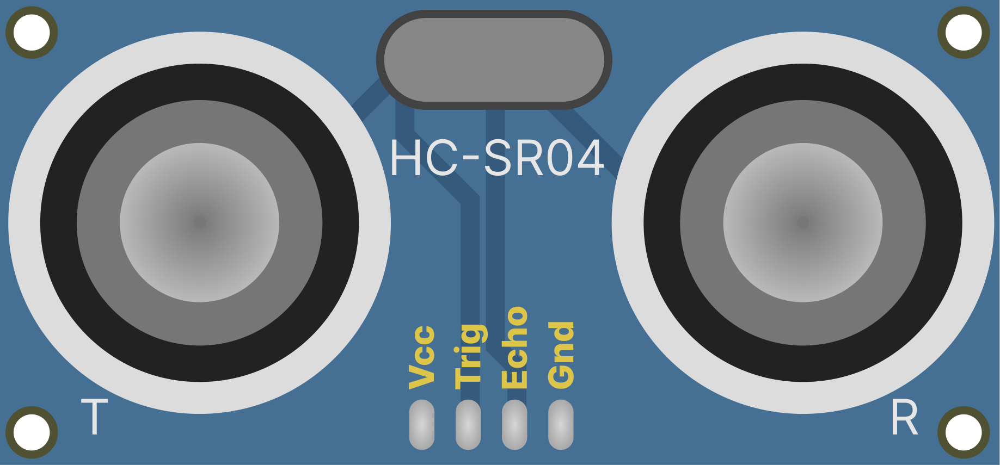

How To Connect

- Connect the VCC of Ultrasonic Sensor to 5V PWR pin of Raspberry Pi
- Connect the TRIG pin of Ultrasonic Sensor to GPIO 18 of Raspberry Pi
- Connect the GND of Ultrasonic Sensor to Ground of Raspberry Pi
- Connect the ECHO pin of Ultrasonic Sensor to 1k Resistor
- Connect the 1k Resistor pin, which is connected to GPIO 24, to Ground
- Connect the 2k Resistor pin, which is connected to 1k Resistor, to Ground
After completing these steps, you can change the position of the object and observe the result in the display.
Connections Logs

Raspberry Pi

1k Resistor
2k Resistor

Ultrasonic Sensor
 Object
Object
CONNECTOR INFO